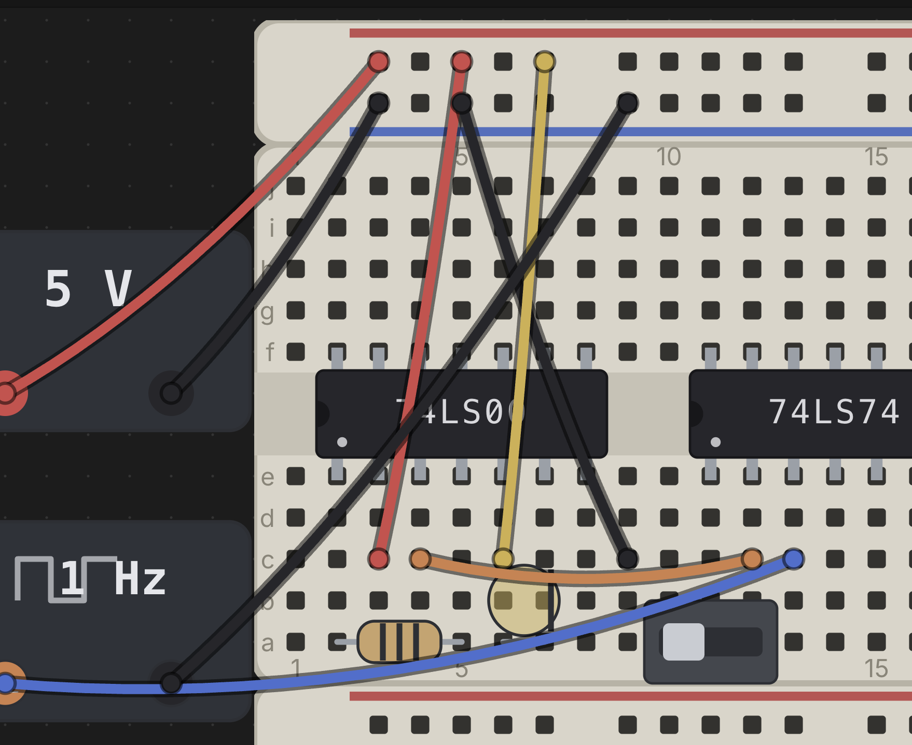

Wiring, Nets & Buses
Wires are how you connect the holes, rails, and terminals you've already populated with boards and parts into a working circuit. Chip Hippo's wire tool is click-click (no drag-to-draw), every wire remembers the two addresses it connects rather than raw screen positions, and a bus lets you lay a whole marching group of wires — a data or address bus — as one gesture. This page covers the wire tool, colors, cross-board wiring, re-routing and deleting a wire, addresses, and buses.

The wire tool
Press W (or click Wire in the toolbar) to arm the wire tool. With the
tool armed:
- Click a free hole or terminal to anchor the first end — a rubber-band preview then tracks your cursor.
- Click a second free point to drop the wire between them.
The tool stays armed after a wire is committed, so you can lay a whole chain of wires without re-arming — each new wire starts fresh, so it does not automatically continue from the last endpoint; just click a new starting hole. A hover ring shows the point under your cursor and turns red the moment it's over an illegal target (already occupied, or the same point you started from) — the rubber band tints red too, so a bad landing is obvious before you click.
Press Esc to cancel a pending (anchored-but-not-yet-dropped) wire without
leaving the tool, or Esc/click Wire again to disarm it entirely. M
also disarms whichever of the wire, bus, or probe tools is currently
armed — one key to "put the tools away." The wire tool (like the bus and
placement tools) is unavailable while a simulation is running; editing is
locked until you press Stop.
Wire colors
Chip Hippo ships eight wire colors: red, black, blue, green, yellow,
orange, white, and purple. The active color is shown as a swatch dot on
the toolbar's Wire button — click it to open the color palette, or, while
the wire tool is armed, press a digit 1–8 to jump straight to that color
(1 = red, 2 = black, and so on through the list above). The color you pick
stays pinned between wires — laying a chain of jumpers keeps whatever
color you last chose, so pick red for a supply run and black for ground and
they'll stay that way until you deliberately switch.
You can also recolor a wire after the fact: right-click it and choose a new color from the context menu (which also offers Remove wire).
Cross-board wires
A wire's endpoints don't care which board or brick they land on — you can run a wire from one breadboard to another, from a board to a PSU terminal, or between two separate strips, exactly as freely as within one board. When you drag a board that a wire is attached to, the wire's other end stays put and the whole wire stretches and re-sags live, riding the move; nothing needs to be re-laid. Deleting a board cascades: any wire with an end seated on that board is removed along with it.
Re-routing & deleting a wire
Grab a wire two different ways:
- Its end cap — drag just one endpoint to a new hole or terminal, re-routing that end while the other stays put. A hover ring and red/legal tint on the dragged end work exactly like placing a fresh wire; release over an illegal point and the end snaps back to where it started.
- Its body — drag anywhere along the wire itself to translate the whole wire rigidly, keeping its length and orientation and just sliding both ends together onto a new pair of holes. If either landing point isn't free, the wire snaps back on release.
To delete a wire, click it to select it, then press Delete or Backspace
(the same shortcut removes whatever's currently selected — a part, a board,
or a wire).
Addresses
Wires never store pixel positions — they store addresses, the one
cross-module currency for anything wireable. An address is
<ownerId>.<point>:
bb1.a12— a grid hole (board idbb1, holea12).bb2.+7— hole 7 on a rail strip's+rail.psu1.+— the+terminal of a PSU brick.
A wire's from/to are just two of these addresses, plus a color. One
hole or terminal holds at most one lead — one pin or one wire end — so the
occupancy check that keeps the wire tool's hover ring legal/illegal is the
same one that governs seating a chip or a discrete. Because everything
resolves through addresses rather than coordinates, a wire keeps working
correctly no matter how the boards around it get rearranged.
Buses
For a wide, tidy bundle — a data or address bus — press B (or click
Bus in the toolbar) to arm the bus tool instead of laying eight wires by
hand. It's click-click like the wire tool: anchor a start hole, then click a
second point to lay the whole run in one go, rendered as a single fat band
rather than a fan of individual wires.
Before you click the second point, set what you're laying:
- Name — type a bus name like
D[7:0]orA[0:15]in the toolbar; the tool parses the bit range from it. Laying a run onto a chip pin group (a catalog-defined bus of pins, like a chip's data lines) instead fans the bus directly onto those pins in bit order. - Width — while the bus tool is armed, press
1for an 8-bit bus (D[7:0]) or2for a 16-bit bus (D[15:0]), the same two presets the toolbar's width menu offers.
A bus is metadata layered over the individual wires it lays — right-click a placed bus to Rename, Recolor (which recolors every member wire too), Un-bundle (keep the wires, drop the bus grouping), or **Delete bus
- wires**. Drag a bus by its band to move every member wire together.
See also
- Chips & Components — placing the parts a wire connects.
- Power & Clock Sources — PSU and clock brick terminals, which wires reach exactly like board holes.
- Probing & Net Names — inspecting the nets your wires and buses form, and naming them.